A little UKRS story
It’s friday today, and I promised my parents to visit them for the weekend, I’ll take you on the trip to my parents (pretend that you are my girlfriend ;)). My parents live at the other side of the country so we have a long train trip ahead. 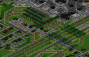 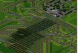 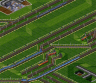 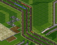 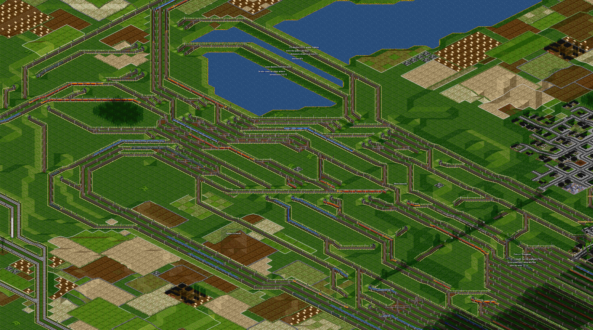 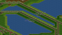 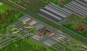 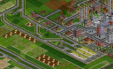 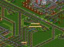 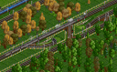 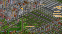 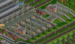 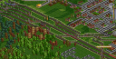 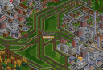 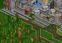 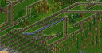 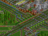 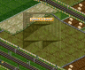 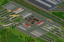 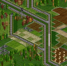 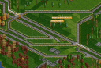 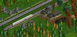 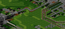 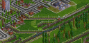 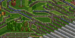 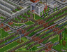
We are at Slontfingburg station, it is a small station against one of the biggest local lines in the country.
Here we arive at Central Station 1, the most northern central station of the country. We transfer here for a train to Central Station Central.
This is a small part of the exit after Central Station 1, we can see a Class 91 and a Pendolino from our HST.
We can see a maglev train disapearing in a tunnel from our HST. Most people try to take pictures of the maglev trains but they often fail because the train is too quick.
We are just in front of Central Station Central. All non-local trains go to here, which also makes this station the biggest transfer station in the country. (It is not recommended to view this picture on a slow connection)
A close-up of one of the most controversial parts of the entry.
We have arived at Central Station Central. We can see the maglev station from here, where we will be going to because I have to pick up my brother from his appartment.
Here we arive at Great Funninghall, my brother lives nearby this station.
We went back to Central Station Central again and took a Wardale 5AT to Central Station 5. Central Station 5 is quite a remarkable station as loads of different train types go there, the station is considered a test station by most people nowadays.
Here we cross a good old-fasioned load balancer which are barely used anymore
Here we arive at Central Station 5, you can only see a part of the entry, the main platforms and some local train platforms.
We take a EE 10000 to transfer us to my parents. It is waiting just behind the building on the second platform of the southern platforms.
Here we see Fennington Switchyard, the entry and exit of the southern platforms of Central Station 5. It is designed with some realism in mind, so there is only 1 tunnel, no bridges and even a 2 way lane (which causes quite some queues).
We are at Tinham Junction now, previously known as Jam Junction because of the huge amount of jams it had in the past. Only part is electrified because only Tinham gets electric trains.
Here we arive at Gadborough, my parents live 15 minutes away from the station and we’re happy that we can finaly stretch our legs again ofter the long train trip.
It’s sunday afternoon and we have to go back to our own houses. We are just leaving Central Station 5 in an AL6.
We are almost at Central Station Central again, you just fell asleep and I woke you to see the train crossing and another small maglev station.
Just some joke we put all through various #openttdcoop games when we’re bored.
I looked up the time table and noticed that it was faster to traffel by maglev to Frindtown and walk to one of the stations connected to Central Station 1. My brother goes his own way to his appartment.
We are sitting in a maglev now and the landscape rushes by, we can just catch a glimp of a small maglev Y-split.
This is Narnwell Ridge Maglev Junction, we go right here to Frindtown.
We cross an old abandoned coal mine here. Coal isn’t used anymore in the modern world because almost everything runs on electricity, only some trains are still diesel.
We just arived at Frindtown, we take a 20 minute walk to a station in Plondinghall, we will take a train from here to our final destination.
We cross a Wardale 604 here, this train is actually the first commercial used 604 in this country.
Here we are at Central Station 1 again, we’ll have to transfer trains because ours will not go to the other half of the local lines.
Here we arive at Slontfingburg again, it was an exhausting weekend but it was worth it. I hope you’ll have a good time.


Categories: Public Server
TrueLight December 11, 2006 22:34
“We cross an old abandoned coal mine here. Coal isn’t used anymore in the modern world because almost everything runs on electricity, only some trains are still diesel.”
Well that is a new one 🙂 Coal doesn’t generate electricity, and diesel is made from coal. A new world is born 🙂
(hehe)
Jinx December 15, 2006 22:43
Actually… most diesel is derived from oil. it is possible to make diesel from coal but it’s not common practice (check up on wikipedia if you will :))
Brianetta December 16, 2006 19:53
Wikipedia is written by the mob.